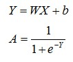
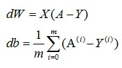
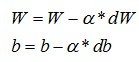

刚通过吴恩达老师的“深度学习”视频学完了Logistic Regression —— 逻辑回归，现在小试牛刀，看看如何实现“猫”图片的识别。
逻辑回归主要使用梯度下降法求出参数下降量来逐步减小成本函数，最终求得需要的模型。逻辑回归思路比较简单，实现的难度较小。主要流程如下：
- 初始化参数
W和b - 根据
W、b、输入X求得输出A - 根据输入
X和输出A求得梯度下降量dW和db - 使用
dW和db来更新W、b - 循环
2-5直至满足学习终止条件，如迭代300次。
实现该算法使用的语言是python，因为python使用简单，而且它的库numpy可以极大的减少运行时间，加快迭代过程。
算法实现
假定训练集输入为X，训练集结果为Y
在实现流程之前首先得加载使用到的python库
1 | import numpy as np |
初始化参数W和b
这部分的时候简单，只需根据输入的规模将W和b初始化全0即可
1 | def initial(dim): |
根据W、b、输入X求得输出A
根据下面公式求出A

正向公式
首先实现激活函数sigmoid
1 | def sigmoid(Z): |
再来实现前向计算
1 | def forward(parameters, X): |
根据X、Y和A求dW和db
根据公式求dW和db

反向公式
1 | def back_progate(X, Y, A): |
使用dW和db来更新W、b
根据公式更新参数W和b

更新参数
1 | def update_parameters(parameters, grads, learning_rate=0.5): |
Logistic Regression模型的建立
将以上的函数进行组合完成Logistic Regression模型的建立
1 | def lr_model(X, Y, iteration_times): |
最终，通过大量的学习过程，我们求出了所需的参数W和b，之后用于测试的时候只需要代入即可，Logistic Regression模型至此全部实现。
结果
经过209张图片的训练，最终Logistic Regression模型对图片的识别成功率大约为70%，对于一个这么简单的模型来说，已经足够了。如果想要继续提升准确率，可以加大训练的图片规模。

![微信分享二维码]()